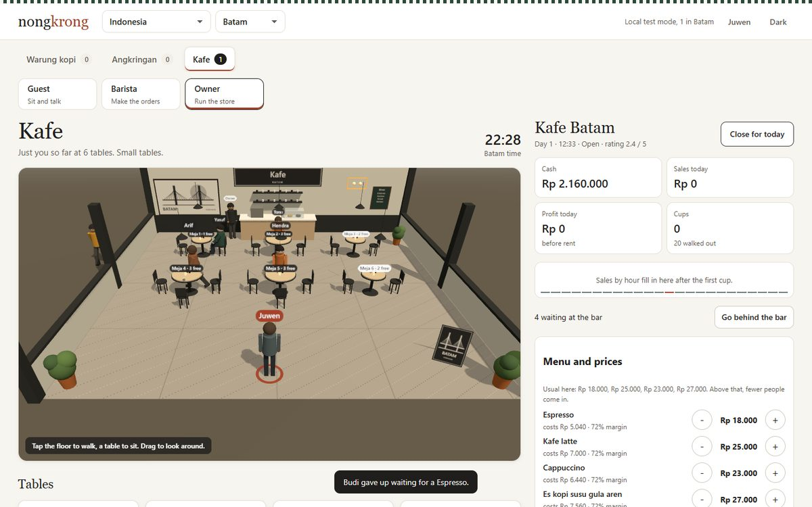
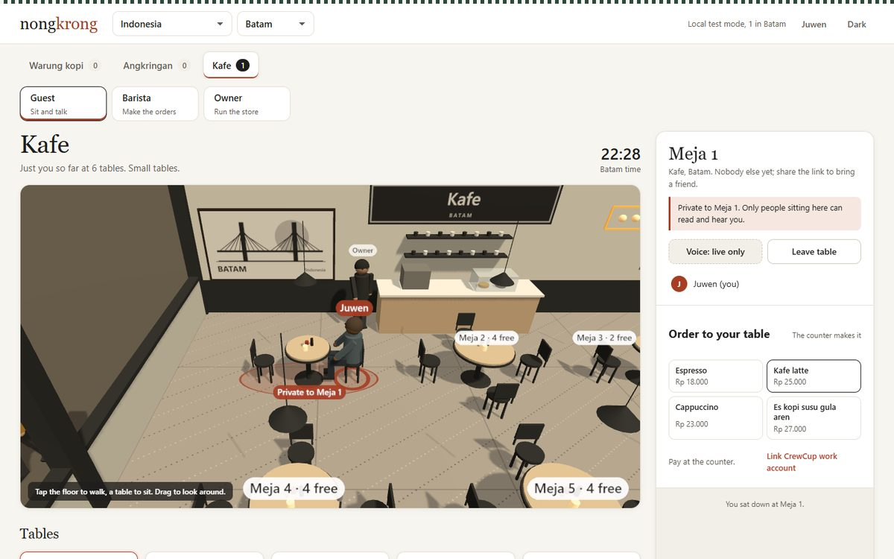
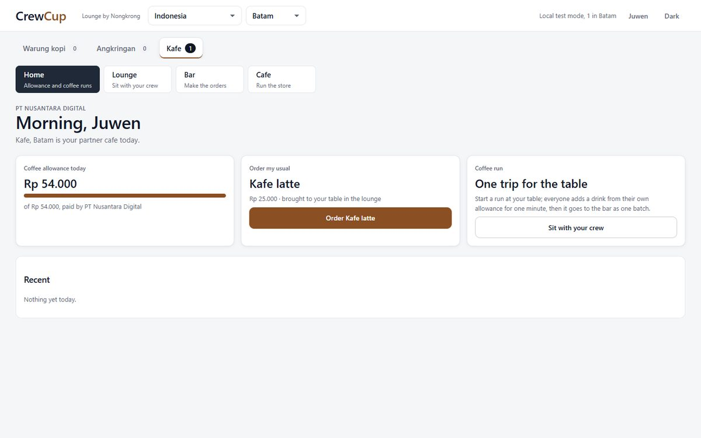
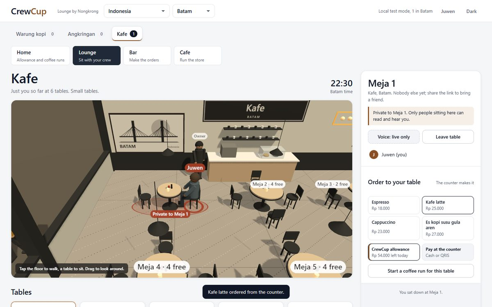
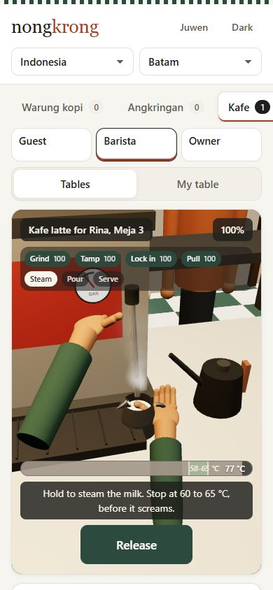
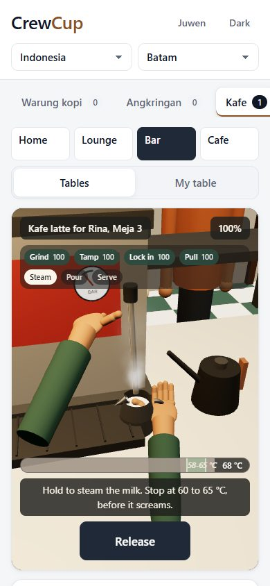

Pick: Nongkrong host, Mix camera (the default at the root address). Mix is the only camera that keeps both halves of the brief: close on your hands and the tools while you hold a step (the ASMR part), and pulled back to the counter and the people waiting while you tap. Over the shoulder shows the queue best but loses the close-up; your eyes is the purest POV but hides who you are serving.
Both hosts stay. The CrewCup Lounge is the same app in CrewCup's look with the coffee allowance, "order my usual" and team coffee runs, and CrewCup's Home now links to it. Scores between the two hosts were within the judges' noise, so the product people open after work keeps the front door.
Honest score: about 6.8 out of 10, not 10. The judges agree the steps, controls and context work; what holds it back is that the tools and hands are simple low-poly shapes, so it reads as a calm game rather than a real POV coffee video.
Update, realism pass. The bar now has studio reflections on the steel, film-style tone mapping, smooth shading, modelled hands with fingers and nails, and a warm stone counter; every screenshot here is retaken. In a blind before/after pair the same council picked the new version 2 to 0 with one tie. The gain is real but modest at screenshot size, so the score above is not raised; it still reads as a calm game, not a filmed POV video.
Scores
| Version | Host | Camera | Council | Open |
|---|
The six versions
The other roles




On a phone

